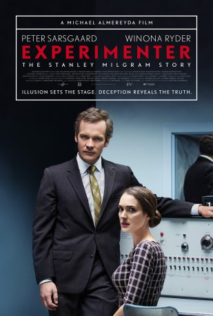

gesehen am 04.10.2016
gesehen am 04.10.2016Alternativ: Experimenter gesehen am 04.10.2016
 
 IMDB-Wertung: 6.6 / 10
IMDB-Wertung: 6.6 / 10  Tomatometer: 84
Tomatometer: 84  Metascore:
Metascore: 
1961 Yale University: Der Sozial-Psychologe Stanley Milgram entwickelt ein psychologisches Experiment, bei dem die Probanden in dem Glauben gelassen werden, dass sie einem freundlichen Unbekannten, der sich an einem Stuhl gefesselt und in einem anderen Raum befindet, schmerzhafte elektrische Schläge verpassen. Das Ergebnis zeigt, dass die Mehrheit der Menschen auch nicht mit den Elektroschocks aufhört, wenn das Opfer um Gnade fleht. Die Begründung ist erschreckend wie simpel: Die Versuchsteilnehmer geben an, dass sie einfach die Anweisungen befolgt haben. Als die Prozesse gegen den Nazi Adolf Eichmann im Fernsehen ausgestrahlt werden, trifft Milgrams Experiment den Nerv der Zeit. In manchen Kreisen wird der Psychologe für seine Projekt gefeiert, einige Kritiker bezeichnen ihn als manipulatives, betrügendes Monstrum. Gegen alle Anfeindungen verteidigt Milgrams Frau Sasha den umstrittenen Wissenschaftler.
Jahr: 2015
Dauer: 98 Minuten
FSK:
Land: USA Studio: Magnolia PicturesTonspuren: DTS - ,
Untertitel:
Auflösung: 1080p (1920x1080) Größe: 5222 MB
Genre: Biographie, Drama, Geschichte
Regisseur: Michael Almereyda
Drehbuch: Kathryn Bigelow
Soundtrack:
Darsteller:
 Anthony Edwards als Miller
Anthony Edwards als Miller Jim Gaffigan als James McDonough
Jim Gaffigan als James McDonough Peter Sarsgaard als Stanley Milgram
Peter Sarsgaard als Stanley Milgram Winona Ryder als Alexandra 'Sasha' Milgram
Winona Ryder als Alexandra 'Sasha' Milgram John Leguizamo als Taylor
John Leguizamo als Taylor Anton Yelchin als Rensaleer
Anton Yelchin als Rensaleer Taryn Manning als Mrs. Lowe
Taryn Manning als Mrs. Lowe Ned Eisenberg als Solomon Asch
Ned Eisenberg als Solomon Asch Edoardo Ballerini als Paul Hollander
Edoardo Ballerini als Paul Hollander Gameela Wright als Mrs. Greer
Gameela Wright als Mrs. Greer Josh Hamilton als Tom Shannon
Josh Hamilton als Tom Shannon Pascal Yen-Pfister als Serge Moscovici
Pascal Yen-Pfister als Serge Moscovici Betty Gabriel als Sally
Betty Gabriel als Sally Vondie Curtis-Hall als Thomas Shine
Vondie Curtis-Hall als Thomas Shine Kellan Lutz als William Shatner
Kellan Lutz als William Shatner Dennis Haysbert als Ossie Davis
Dennis Haysbert als Ossie Davis Frank Harts als Washington , uncredited
Frank Harts als Washington , uncredited Peter Iasillo Jr. als Homeless Man , uncredited
Peter Iasillo Jr. als Homeless Man , uncredited Danny A. Abeckaser als Braverman
Danny A. Abeckaser als BravermanDatei: X:\2015(A-F)\Experimenter (2015, FSK, 1920x1080).mkv seit 19.09.2016
Festplatte: HD 2015(A-Z)
 Es gibt insgesamt 143 Filme in der Gruppe '2015(A-F)'
Es gibt insgesamt 143 Filme in der Gruppe '2015(A-F)'